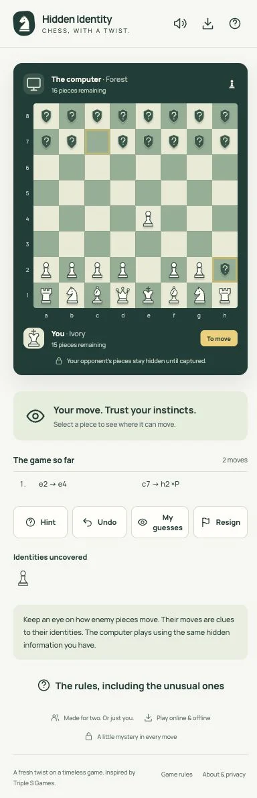

First pass
Under the board, while you play:
- a status card with a heading and a hint
- the full move list
- four buttons: Hint, Undo, My guesses, Resign
- a list of revealed pieces
- a tip card, a rules link, three feature lines and a footer
This capture has no Bluff or Challenge button. Challenges were made from the move list, and on desktop Bluff was a button in the side panel.

Final
Under the board, while you play:
- one status line
- Move and Bluff in one switch
- Challenge, Moves and More
The rest moved into two sheets. The board is wider too: it now uses the full phone width instead of sitting inside a padded card.